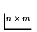

The Scilab function is [o,b]=ext(a). Its input is a matrix and its outputs are a matrix and a column vector.
The corresponding Fortran subroutine is fext(a,m,n,b,p) and its arguments are an integer array (used as input and output), its dimensions m,n (used as input) and another integer array and its dimension p (used as outputs).
The dimension p of the output b is computed by the Fortran subroutine and the memory for this variable is also allocated by the Fortran subroutine (perhaps by to a call to another C function). So the type of the variable is external and we choose cintf.
Moreover, the output a of the Scilab function is the same as the input
but its type changes from a
 matrix to a
matrix to a

matrix. This conversion is made my introducing the Scilab variable oThe description file is the following:
ext a a matrix m n b column p o matrix n m fext a m n b p a integer m integer n integer b cintf p integer out sequence o b o a ***************************